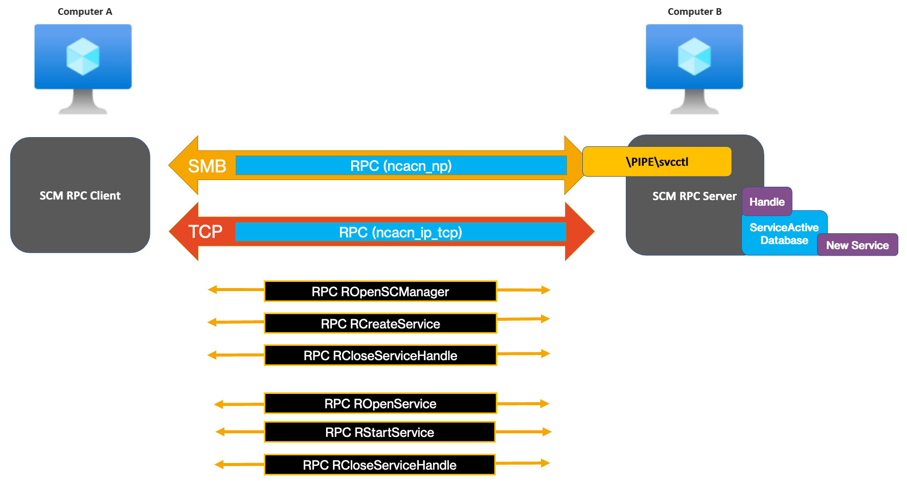
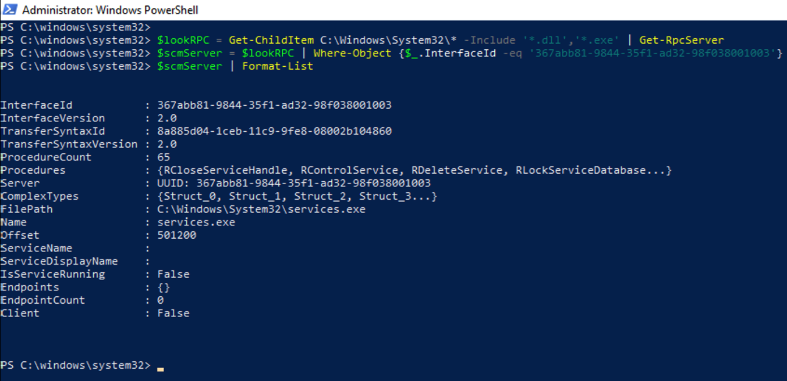
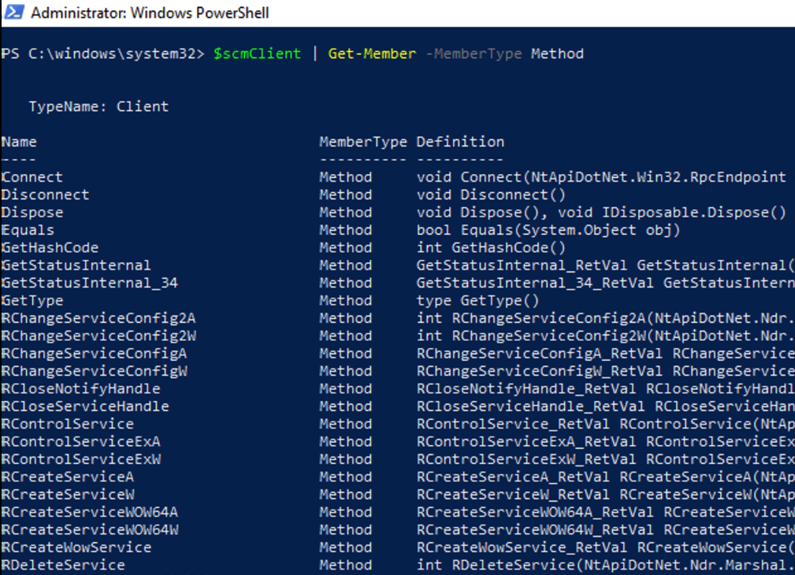
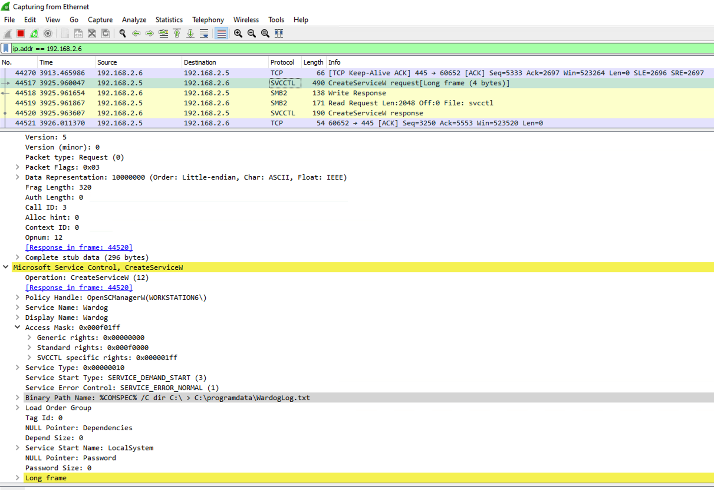
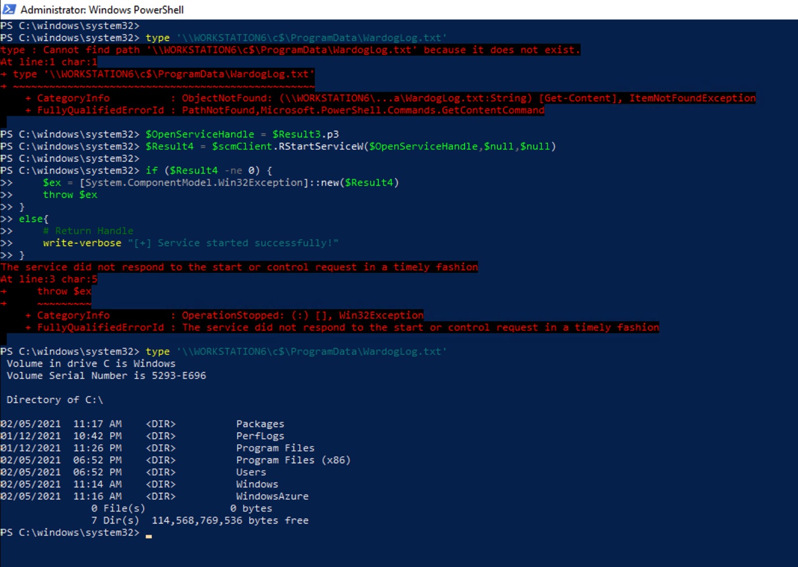
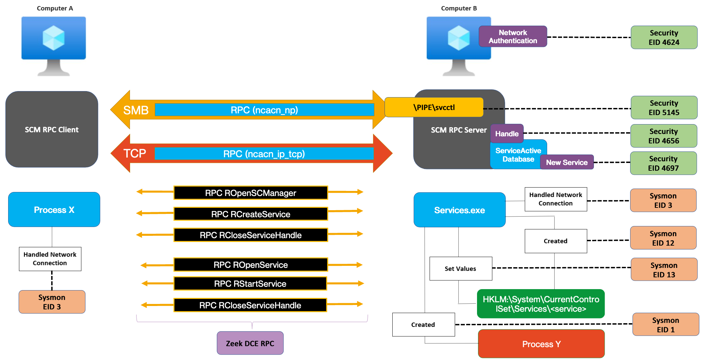

Creating and Starting a Windows Service Remotely Using NtObjectManager Via Remote Procedure Calls (RPC) Over SMB
I wanted to learn more about NtObjectManager and the latest support for named pipes RPC clients so I decided to give it a try.
In this post, I will show you how to use a PowerShell module named NtObjectManager, developed by James Forshaw @tiraniddo, to create a Remote Procedure Call (RPC) client to interact with the Service Control Manager (SCM) RPC Server of a remote endpoint and be able to create and start a service. The RPC traffic will be transported over the Server Message Block (SMB) Protocol, and we will go step-by-step calling each RPC method needed to create and start the service.
The PowerShell scripts utilized in the post are available in the WinRPCFunctions project in Github.
What is RPC?
According to MS documentation, RPC is an inter-process communication (IPC) mechanism that enables data exchange and the invocation of functionality that resides in a different process. The different process can be on the same machine, on the local area network (LAN), or across the Internet.
According to OSF’s Distributed Computing Environment (DCE) 1.1, the RPC model makes a functional distinction between clients and servers. A client requests a service, and a server provides the service by making resources available to the remote client.
What is the Service Control Manager (SCM)?
The SCM is an RPC server that enables service configuration and control of service programs. This service is started at system boot and it maintains a database of installed services in the registry. The database, known as the ServicesActive database or the SCM database, is used by the SCM and programs that add, modify, or configure services.
The following is the registry key for this database: HKEY_LOCAL_MACHINE\SYSTEM\CurrentControlSet\Services. This key contains a subkey for each installed service and driver service. The name of the subkey is the name of the service.
Starting with Windows Vista, the service control manager (SCM) supports remote procedure calls over both Transmission Control Protocol (RPC/TCP) and named pipes (RPC/NP). The SCM RPC server interface universally unique identifier (UUID) is 367ABB81-9844-35F1-AD32-98F038001003 and when SMB is used as a transport protocol, the RPC server listens on the RPC endpoint \PIPE\svcctl.
What is NtObjectManager?
NtObjectManager is a PowerShell module from the sandbox-attacksurface-analysis-tools developed by James Forshaw @tiraniddo to access the NT object manager namespace.
Windows implements an object model to provide consistent and secure access to the various internal services implemented in the executive. The Windows object manager is an executive component responsible for creating, deleting, protecting, and tracking objects. The object manager centralizes resource control operations that otherwise would be scattered throughout the operating system.
(Russinovich, Mark,Solomon, David,Ionescu, Alex. Windows Internals, Part 1 (6th Edition) (Developer Reference))
According to MS docs, the Windows operating system uses the term executive layer to refer to kernel-mode components that provide a variety of services to device drivers, including:
- Object management
- Memory management
- Process and thread management
- Input/output management
- Configuration management
This is an image showing the major internal components of the Windows operating system where we can see at what layer the object manager operates:

What does NtObjectManager have to do with RPC and SCM?
Last year, December 18th, 2020, James Forshaw @tiraniddo updated the NtObjectManager project to support Named Pipes - RPC Transport for RPC Clients. Then, on January 15th, 20201, he officially updated the module in PowerShell Gallery to version v.1.1.30 for anyone to simply install, import and play with it.
Released v1.1.30 of NtObjectManager to the PS gallery. Main addition is the support for named pipe RPC clients. Also updated the NuGet packages, they now contain multi-target (no more "Core" versions) as well as full symbols and source link support. https://t.co/PQBVIyIrNy
— James Forshaw (@tiraniddo) January 15, 2021
This was great because instead of using command-line utilities such as SC.exe, we could now use NtObjectManager to programmatically create a RPC client, run a few remote procedure calls and interact with the SCM RPC server of a remote endpoint, all over SMB.
I find this fascinating for threat research because I can go remote procedure call - by - remote procedure call and understand the underlying behavior of someone creating a service remotely over SMB.
Ok, time to run some code..
Install NtObjectManager
In a fresh VM, I had to run the following commands to set the PSGallery repository and install new modules.
Set-ExecutionPolicy Unrestricted -Force
[Net.ServicePointManager]::SecurityProtocol = [Net.SecurityProtocolType]::Tls12
Install-PackageProvider -Name NuGet -MinimumVersion 2.8.5.201 -Force
Set-PSRepository -Name PSGallery -InstallationPolicy Trusted
Register-PSRepository -Default
Install the module
Install-Module NtObjectManager -Force
Import the module
Import-Module NtObjectManager -verbose
Set DbgHelp DLL path for Symbols Resolving
In order to parse RPC servers and resolve RPC procedures, we can specify the path to the dbghelp DLL from Windows SDK. The dbghelp.dll is provided after installing debugging tools for Windows. You can install it via the Windows 10 SDK setup or programmatically with the following PowerShell commands:
# Download Installer
$url = "https://go.microsoft.com/fwlink/p/?linkid=2083338&clcid=0x409"
$wc = new-object System.Net.WebClient
$request = [System.Net.WebRequest]::Create($url)
$response = $request.GetResponse()
$OutputFile = [System.IO.Path]::GetFileName($response.ResponseUri)
$response.Close()
$FilePath = "C:\ProgramData\$OutputFile"
$wc.DownloadFile($url, $FilePath)
if (!(Test-Path $FilePath)) { Write-Error "Welp!" }
# Install Windows Debuggers - Silently
Start-Process "C:\ProgramData\winsdksetup.exe" -Wait -ArgumentList '/features OptionId.WindowsDesktopDebuggers /ceip off /q'
We can now run the following command to set the DbgHelp DLL path via the NtObjectManager module:
Set-GlobalSymbolResolver -DbgHelpPath 'C:\Program Files (x86)\Windows Kits\10\Debuggers\x64\dbghelp.dll'
Start and Create Services via RPC Model
Now that we have NtObjectManager imported and our symbols resolving path set, let’s take a look at what we are going to do next.
The image below is a simple representation of some of the remote procedure calls that we can use to create and start a service.
I also added the two type of transports one could use to carry the RPC traffic. All this is based on SCM Remote Protocol documentation. Of course there are other ways to create a service remotely.

So, how can we create a RPC client to call for all those RPC methods and create or start a service?
Parse SCM RPC Server
First, we need to find and parse the SCM RPC server in order to create a RPC client from it. As mentioned earlier in this post, the SCM RPC server interface UUID is 367abb81-9844-35f1-ad32-98f038001003. Therefore, we can use the Get-RpcServer command to find the .dll or .exe that hosts the SCM RPC server code. As you can see, we are looking for objects with InterfaceId that matches our RPC server interface UUID.
$lookRPC = Get-ChildItem C:\Windows\System32\* -Include '*.dll','*.exe' | Get-RpcServer
$scmServer = $lookRPC | Where-Object {$_.InterfaceId -eq '367abb81-9844-35f1-ad32-98f038001003'}
$scmServer | fl

The commands above take about 2-3 minutes. Since you already know that C:\Windows\System32\services.exe contains the SCM RPC server code, you can simply run this command to expedite the process:
$scmServer = Get-RpcServer C:\Windows\System32\services.exe | Where-Object { $_.InterfaceId -eq '367abb81-9844-35f1-ad32-98f038001003' }
Create RPC Client
Next, we can use the Get-RpcClient command to create a new RPC client from the parsed RPC server.
$scmClient = Get-RpcClient $scmServer
We can also explore the available methods from the RPC client object to send remote procedure calls to the SCM RPC server.
$scmClient | Get-Member -MemberType Method

Connect RPC Client to Remote RPC Endpoint
As you can see in the image below, the RPC client starts off disconnected. Therefore, we can use the Connect-RpcClient command to connect the RPC client to the remote RPC endpoint (\pipe\svcctl).
$scmClient

When connecting the RPC Client to the remote RPC endpoint, there are a few parameters that we nee to pass:
- Client: Our new RPC client object
- EndpointPath: The named pipe
\pipe\svcctl - ProtocolSequence: ncacn_np (named pipes)
- NetworkAddress: The IP address of the remote endpoint
- SecurityQualityOfService: Impersonation level (i.e. Impersonation)
Connect-RpcClient -Client $scmClient -EndpointPath "\pipe\svcctl" -ProtocolSequence ncacn_np -NetworkAddress 192.168.2.5 -SecurityQualityOfService $(New-NtSecurityQualityOfService -ImpersonationLevel Impersonation)
We can now check and see if the RPC client is connected. ..and it is.. ;) !
$scmClient

We can also see the traffic generated in Wireshark after running the Connect-RpcClient command:

We are now ready to send a few remote procedure calls to the SCM RPC server!
Create Service Remotely RPC Calls
We are going to send the following RPC calls from our client to the SCM RPC server:
Send ROpenSCManagerW Call
The ROpenSCManagerW method establishes a connection to the server and opens the SCM database on the specified server.
The parameters that we are going to pass to our remote procedure call are the following:
- MachineName: Name of remote endpoint
- DatabaseName: Name of the database (i.e.
ServicesActive) - DesiredAccess: A value that specifies the access to the database
The SCM Access Rights options are the following:
- SC_MANAGER_ALL_ACCESS (0xF003F): Includes STANDARD_RIGHTS_REQUIRED, in addition to all access rights in this table.
- SC_MANAGER_CREATE_SERVICE (0x0002): Required to call the CreateService function to create a service object and add it to the database.
- SC_MANAGER_CONNECT (0x0001): Required to connect to the service control manager.
- SC_MANAGER_ENUMERATE_SERVICE (0x0004): Required to call the EnumServicesStatus or EnumServicesStatusEx function to list the services that are in the database. Required to call the NotifyServiceStatusChange function to receive notification when any service is created or deleted.
- SC_MANAGER_LOCK (0x0008): Required to call the LockServiceDatabase function to acquire a lock on the database.
- SC_MANAGER_MODIFY_BOOT_CONFIG (0x0020): Required to call the NotifyBootConfigStatus function.
- SC_MANAGER_QUERY_LOCK_STATUS (0x0010): Required to call the QueryServiceLockStatus function to retrieve the lock status information for the database.
We can run the following to connect to our remote workstation WORKSTATION6, open the SCM Database (ServicesActive) and get a handle with SC_MANAGER_CREATE_SERVICE access rights.
$Result = $scmClient.ROpenSCManagerW("WORKSTATION6","ServicesActive",[NtApiDotNet.Win32.ServiceControlManagerAccessRights]::CreateService)
# Extract the handle
$scmHandle = $Result.p3
$scmHandle

We can also see the traffic generated in Wireshark after running the ROpenSCManagerW remote procedure call:

Send RCreateServiceW Call
After obtaining a handle to the SCM database, we can send the RCreateServiceW call to create a service remotely.
The RCreateServiceW method creates the service record in the SCM database.
Most of the parameters that we are going to pass to our remote procedure call are the following:
- SCManager handle: SCM handle we obtained initially with the
ROpenSCManagerWremote procedure call - ServiceName: Name of the service to install remotely
- DisplayName: Display name by which user interface programs identify the service.
- DesiredAccess: A value that specifies the access to the service.
- ServiceType: A value that specifies the type of service (i.e. SERVICE_WIN32_OWN_PROCESS (0x00000010) - Service that runs in its own process)
- StartType: A value that specifies when to start the service (i.e. SERVICE_DEMAND_START (0x00000003) - Starts the service when a client requests the SCM to start the service)
- ErrorControl: A value that specifies the severity of the error if the service fails to start and determines the action that the SCM takes (i.e. SERVICE_ERROR_NORMAL (0x00000001) - The SCM logs the error, but continues the startup operation)
- BinaryPathName: Fully qualified path to the service binary file. The path MAY include arguments.
We can run the following to create the service Wardog on the remote endpoint using the SCM Handle we obtained initially with the ROpenSCManagerW call. When we later start theWardog service, it will execute cmd.exe and list the files and folders in the C:\ drive to then push the results to a file located at C:\programdata\WardogLog.txt:
# Set the binarypath with arguments
$BinaryPathName = '%COMSPEC% /C dir C:\ > C:\programdata\WardogLog.txt'
# Create service remotely
$Result2 = $scmClient.RCreateServiceW($scmHandle,'Wardog','Wardog',[NtApiDotNet.Win32.ServiceAccessRights]::All,[NtApiDotNet.Win32.ServiceType]::Win32OwnProcess,[NtApiDotNet.Win32.ServiceStartType]::Demand,[NtApiDotNet.Win32.ServiceErrorControl]::Normal,$BinaryPathName, $null, $null, $null, 0, 'LocalSystem',$null,0)
# Results
$Result2

We can also see the traffic generated in Wireshark after running the RCreateServiceW remote procedure call:

We can also see the registry activity generated on the remote endpoint with Process Monitor (Sysinternals):

Send RCloseServiceHandle Call
We can close the handle we got back after creating the service. We are going to request another handle later to start the service.
The RCloseServiceHandle method is called by the client and in response the server releases the handle to the specified service or the SCM database.
# Extract the handle
$ServiceCreationHandle = $Result2.p15
# Close the handle
$scmClient.RCloseServiceHandle($ServiceCreationHandle)
Start Service Remotely RPC Calls
We will send the following RPC calls from our client to the SCM RPC server:
Send ROpenServiceW Call
Now that our service has been created, we can start it remotely.
First, we need to open a handle to the existing Windows service (Wardog service).
The ROpenServiceW method creates an RPC context handle to an existing service record.
The parameters that we are going to pass to our remote procedure call are the following:
- SCManager handle: SCM handle we obtained initially with the
ROpenSCManagerWremote procedure call - Servicename: The name of the service record (i.e.
Wardog). - DesiredAccess: A value that specifies the access right.
The service access rights we can use are the following:
- SERVICE_ALL_ACCESS (0xF01FF): Includes STANDARD_RIGHTS_REQUIRED in addition to all access rights in this table.
- SERVICE_CHANGE_CONFIG (0x0002): Required to call the ChangeServiceConfig or ChangeServiceConfig2 function to change the service configuration. Because this grants the caller the right to change the executable file that the system runs, it should be granted only to administrators.
- SERVICE_ENUMERATE_DEPENDENTS (0x0008): Required to call the EnumDependentServices function to enumerate all the services dependent on the service.
- SERVICE_INTERROGATE (0x0080): Required to call the ControlService function to ask the service to report its status immediately.
- SERVICE_PAUSE_CONTINUE (0x0040): Required to call the ControlService function to pause or continue the service.
- SERVICE_QUERY_CONFIG (0x0001): Required to call the QueryServiceConfig and QueryServiceConfig2 functions to query the service configuration.
- SERVICE_QUERY_STATUS (0x0004) : Required to call the QueryServiceStatus or QueryServiceStatusEx function to ask the service control manager about the status of the service. Required to call the NotifyServiceStatusChange function to receive notification when a service changes status.
- SERVICE_START (0x0010): Required to call the StartService function to start the service.
- SERVICE_STOP (0x0020): Required to call the ControlService function to stop the service.
- SERVICE_USER_DEFINED_CONTROL(0x0100): Required to call the ControlService function to specify a user-defined control code.
We can run the following to get a handle to the service Wardog on the remote endpoint with access rights SERVICE_START (0x0010):
$Result3 = $scmClient.ROpenServiceW($scmHandle,'Wardog',[NtApiDotNet.Win32.ServiceAccessRights]::Start)
$Result3

We can also see the traffic generated in Wireshark after running the ROpenServiceW remote procedure call:

Send RStartServiceW Call
We can now start our Wardog service remotely using the handle we obtained after running the ROpenServiceW remote procedure call.
The RStartServiceW method starts a specified service.
The parameter that we are going to pass to our remote procedure call is the following:
- Service handle: Handle we obtained with the
ROpenServiceWremote procedure call. TheSERVICE_STARTaccess right MUST have been granted to the caller when the RPC context handle to the service record was created.
We can first check if the file C:\ProgramData\WardogLog.txt exists on workstation WORKSTATION6.
It should not exist since we have not started the service yet.
type '\\WORKSTATION6\c$\ProgramData\WardogLog.txt'
We can run the following to start service Wardog on the remote endpoint:
# Extract handle
$OpenServiceHandle = $Result3.p3
# Send RStartServiceW
$Result4 = $scmClient.RStartServiceW($OpenServiceHandle,$null,$null)
We can handle the results with the following commands:
if ($Result4 -ne 0) {
$ex = [System.ComponentModel.Win32Exception]::new($Result4)
throw $ex
}
else{
# Return Handle
write-verbose "[+] Service started successfully!"
}
We are going to get an error message which is expected since we are simply running a few cmd commands.
However, the file gets created since the service actually starts, but it just does not stay up.
We can check again if the file C:\ProgramData\WardogLog.txt exists on workstation WORKSTATION6.
type '\\WORKSTATION6\c$\ProgramData\WardogLog.txt'
As you can see, the service started, executed the command line and created the file.

That’s it! Very easy right?
Why did I do all this?
From a defensive perspective, walking through the execution of each remote procedue call, helped me to understand and validate the underlying behavior of the technique "Create and Start services remotely". It also helped me to validate the detection model I had created based on initial documentation. Finally, I was able to map event logs to several of the actions taken in this specific technique variation.

You can always extend this model and look of other security events that might not be as practical yet to collect and consume such as the ones coming from RPC ETW provider (Microsoft-Windows-RPC)
I hope you enjoyed this short post and learned as much as I did while going through this process.
I am creating PowerShell scripts in the WinRPCFunctions project to expedite the creation of these use cases, so if you want to learn more about it and help create more use cases with the following RPC servers via SMB, let me know:

Resources
- WinRPCFunctions Project - SCM Scripts: https://github.com/Cyb3rWard0g/WinRpcFunctions/tree/master/scm
- PCAP File: https://github.com/Cyb3rWard0g/WinRpcFunctions/blob/master/resources/output/datasets/NtObjectManager_RPC_SMB_SCM_CreateStartService.pcapng
- Open Threat Research Discord Server Invite: https://bit.ly/OTRDiscord
References
- https://docs.microsoft.com/en-us/openspecs/windows_protocols/ms-wpo/49801c02-2e60-4133-8c6a-d9e1b6d9c02a#gt_8a7f6700-8311-45bc-af10-82e10accd331
- https://medium.com/threat-hunters-forge/extending-the-exploration-and-analysis-of-windows-rpc-methods-calling-other-functions-with-ghidra-e4cdaa9555bd
- https://docs.microsoft.com/en-us/windows-hardware/drivers/kernel/overview-of-windows-components
- https://docs.microsoft.com/en-us/windows-hardware/drivers/kernel/windows-kernel-mode-executive-support-library
- https://docs.microsoft.com/en-us/windows/win32/services/service-control-manager
- https://docs.microsoft.com/en-us/windows/win32/services/database-of-installed-services
- https://docs.microsoft.com/en-us/windows/win32/services/services-and-rpc-tcp
- https://github.com/OTRF/ThreatHunter-Playbook/blob/master/docs/library/windows/service_control_manager.md
- https://docs.microsoft.com/en-us/openspecs/windows_protocols/ms-scmr/dc84adb3-d51d-48eb-820d-ba1c6ca5faf2
- https://docs.microsoft.com/en-us/openspecs/windows_protocols/ms-scmr/b902a454-b5fa-403b-9325-029fae04cbe0
- https://docs.microsoft.com/en-us/openspecs/windows_protocols/ms-scmr/6a8ca926-9477-4dd4-b766-692fab07227e
- https://docs.microsoft.com/en-us/openspecs/windows_protocols/ms-scmr/a2a4e174-09fb-4e55-bad3-f77c4b13245c
- https://docs.microsoft.com/en-us/openspecs/windows_protocols/ms-scmr/6d0a4225-451b-4132-894d-7cef7aecfd2d
- https://docs.microsoft.com/en-us/openspecs/windows_protocols/ms-scmr/d9be95a2-cf01-4bdc-b30f-6fe4b37ada16
Subscribe to Open Threat Research Blog
Get the latest posts delivered right to your inbox